Sponsoring any one of our family below is the greatest gift you could give to Coders for Animals family. You are donating to our mission and goal, and you are also being a sponsor to an animal who needs your help.
Once you sponsor any of our family below, you will receive pictures of your sponsored animal.
If you'd like to receive more information of animals below, or if you have any inquiries, you can email us at : blahblah@blahblah.com
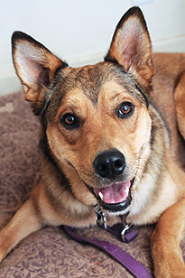
Billy
Billy is 3 years old, he loves freesbie! If you have a freesbie, Billy will follow you everywhere!
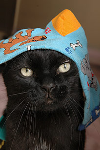
Kitty
Kitty is 2 years old. She is very chic and very fashionable. She loves wearing a sock as a hat!
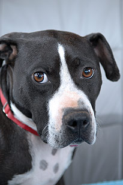
Curly
Curly is 5 years old. He is very timid and well behaved. He is a gentleman and a loyal friend.
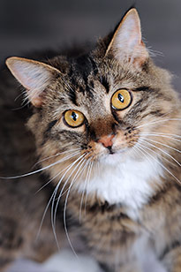
Brownie
Brownie is 6 months old. He is a very curious cat! He will observe all of your moves and will be curious.
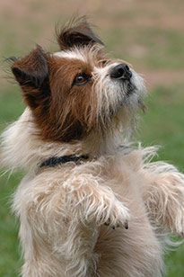
Frankie
Frankie is 8 years old. He has the biggest appetite! He will do all tricks to get his favorite treats.
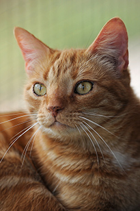
Freddy
Freddy is 1 year old. He is the smartest cat of all! We believe he will be able to do Calculus soon.
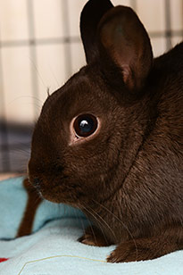
Rabbitty
Rabbitty is 8 months old. As you can tell from her name, she is the only rabbit in our big family!
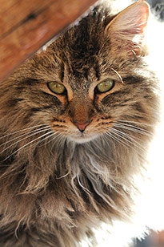
Cowboy
Cowboy is 2 years old. Cowboy thinks he's biggest lion in the whole world. Talk about charisma!
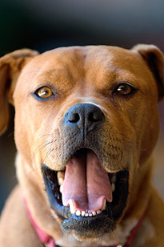
Booey
Booey is 4 years old. Booey is so playful and happy, he will make you smile even on gloomy rainy day!
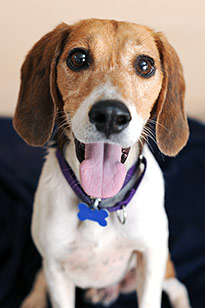
Snoopy
Snoopy is 6 years old. Snoopy will make sure you don't leave your belongings behind. Great assistant!
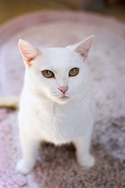
Snowy
Snowy is 3 years old. Snowy seems so cold, but has the warmest heart. She is the most loyal cat!
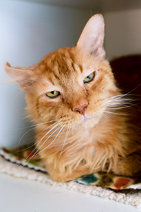
Grumpy
Grumpy is 4 years old. Like his name, he seems grumpy all the time, but he is actually very playful!